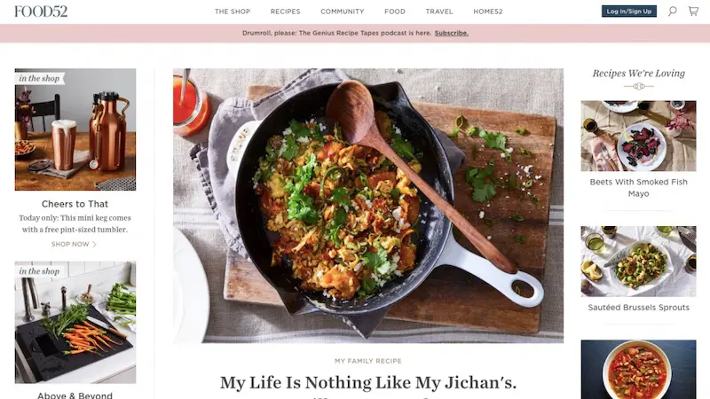

Food52
When it comes to the ‘official version’, so to speak, of food blogging, the culinary magazines are on top. This is literary the case with Food52, which ranks amongst the gods of the social media food show with no less than 2.7m followers on Instagram. Like all the respected magazines out there, Food52 has its “how to” perks – we can assure you, you won’t get enough of it.
Here you can find how you can preserve your favorite type of pumpkin, the latest trends in home design, and a hearty recipe for a cheesy green Shakshuka – all packed into beautiful stories, sufficiently long enough to keep you company over your morning coffee, and delivered to you directly by expert chefs and artistic decorators.
And when you’d have had enough of indulging in the mouth-watering recipes and heart-stealing pictures, Food52 has a shop area prepared for you, also packed with home and kitchen goodies.